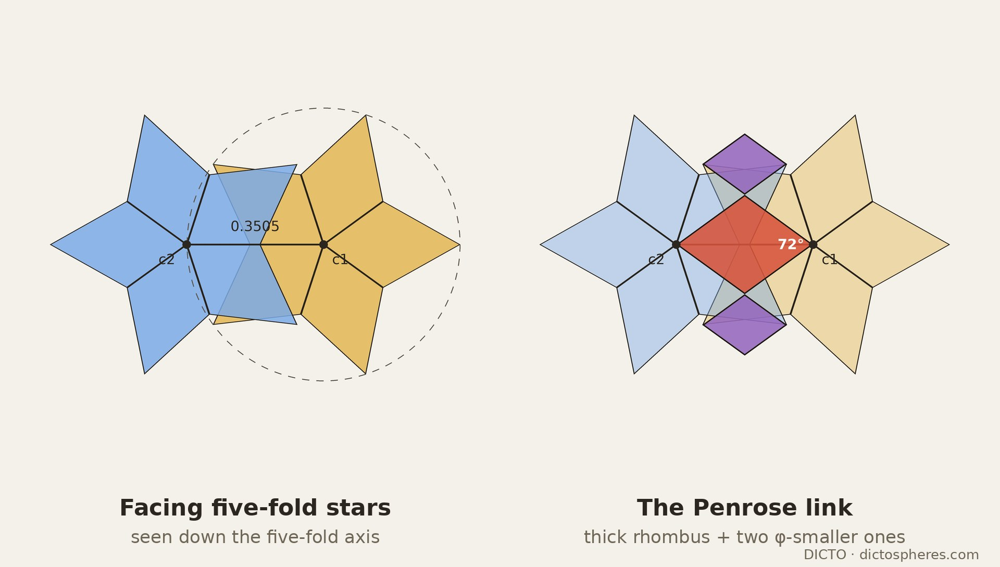
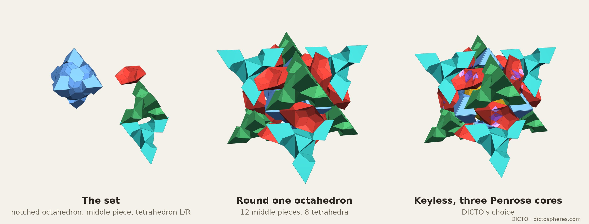
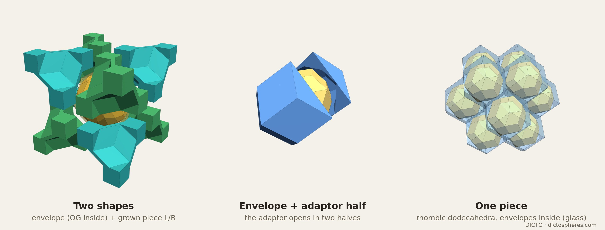
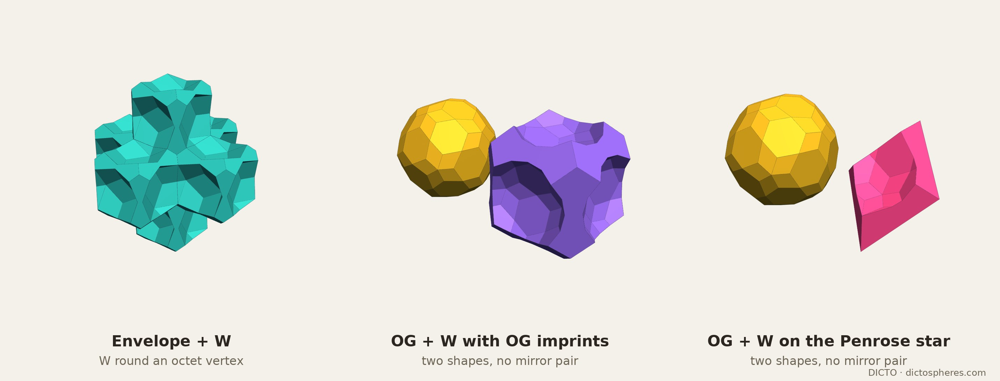
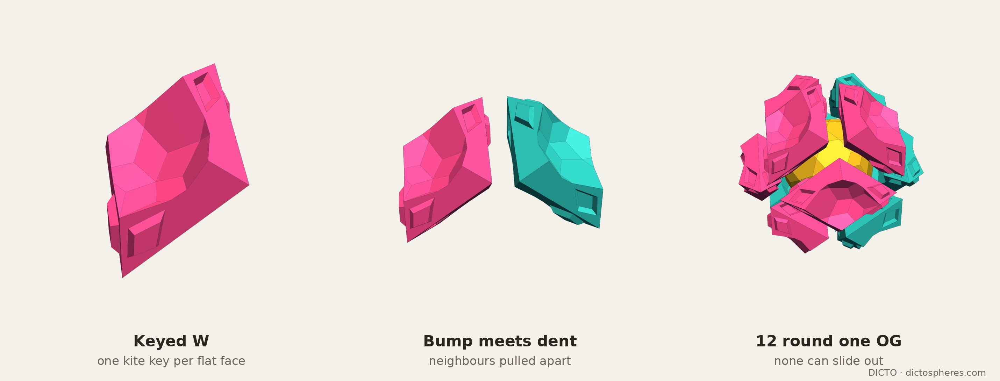
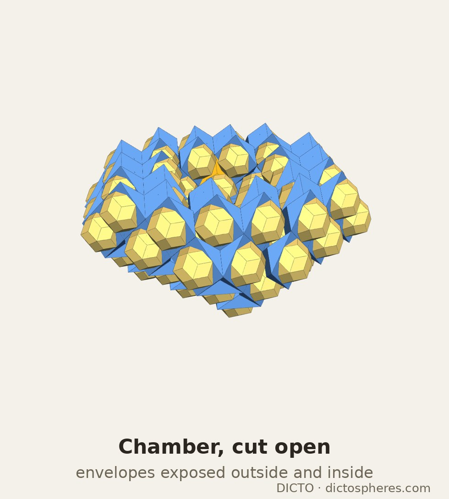

Exact space-filling kits: golden keys, a Penrose link between facing five-fold stars, golden envelopes in the octet, and one-piece glue with Ogdoecontahedron imprints
The DICTO Ogdoecontahedron (OG) is a convex solid of 20 regular hexagons and 60 kites, the polar of the DICTO Hecatodihedron, exact in every coordinate (DICTO DOI: 10.5281/zenodo.23404688). In its bcc packing it touches eight neighbours through eight hexagons; the gap of that packing, 22.57% of space, is the subject of the companion paper Golden Bodhi Pyrochlore (DICTO DOI: 10.5281/zenodo.23451210), where DICTO's one-piece answer is the Bull-horns OG adaptor. This paper follows a second route, which DICTO opened by asking for "an octet truss system from pieces available".
The OG in its octahedron (exact). The OG's eight joint hexagons lie exactly on the faces of the regular octahedron |x| + |y| + |z| = R with R = 2φ/3 (edge 2√2φ/3 ≈ 1.5255); every corner of the OG is inside or on it, 48 of them on it. The OG, of volume (−1000 + 1240√5)/1539 ≈ 1.151868, fills 68.83% of its octahedron. The six corner cones cut the rest into six equal caps, (1108 − 316√5)/4617 ≈ 0.086940 each.
The octet frame (exact). Put the octahedra on the face-centred cubic lattice of vectors R(1, 1, 0) and its turns, and the regular tetrahedra T+ = conv(Rex, Rey, Rez, R(1, 1, 1)) and T− = −T+ between them: the octet truss of Fuller (1961), the tetrahedral–octahedral honeycomb. One octahedron and two tetrahedra make one lattice cell, (64 + 32√5)/81 + 2 · (16 + 8√5)/81 = (32 + 16√5)/27 ≈ 2.510263. Every face of T+ lies on an octahedron face of one tetrahedral class and every face of T− on the other, so each OG meets four T+ on one tetrahedral set of joint hexagons and four T− on the other. The plain kit, one OG, six caps, T+ and T−, already fills space; the OGs alone take (1025 − 435√5)/114 ≈ 45.886% of it.
What "exact" means here. All geometry is in ℚ(√5), as pairs of rationals. Corners are found by solving plane triples (a float pre-screen may only discard a triple whose float solution misses a plane by more than 10−7) and every corner is checked exactly against every plane; volumes come from exact corners. The kits marked "proved" in Table 1 were proved to fill space exactly once by Claude Fable with an engine written independently of the study's, without symmetry shortcuts, and checked on dicto-node with at least 4 000 000 sample points per kit (uniform and near-face): no point uncovered, none covered twice. Meshes (manifold3d) confirm that each piece is one solid. Quantities marked float, such as the sphericity ψ = π1/3(6V)2/3/A (1 for a ball, 0.806 for a cube), are not exact unless stated.
The key. The OG's golden envelope, the rhombic triacontahedron (RT) of inradius 2/3 in the same frame, pokes through each joint plane as a small tetrahedron: its three-fold corner, at |x| + |y| + |z| = 2/φ, over three RT corners that lie exactly on the plane. Those three base corners lie on the octahedron's edges, at their golden-section points (φ : 1), so the key's base triangle is inscribed in the octahedron face. Each key, of volume (−44 + 20√5)/81 ≈ 0.008906, lies wholly inside its tetrahedron, and its three side faces are exact half golden rhombi (31.72°, 31.72°, 116.57°). The four keys entering a tetrahedron never meet.
The kit. All eight keys go out from the OG as bumps and each tetrahedron takes four dents. Keyed OG (−7688 + 4280√5)/1539 ≈ 1.223113, six caps, and two dented tetrahedra 64/27 − 8√5/9 ≈ 0.382754 make the cell exactly. Fusing the OG and its caps gives the golden-key octet: the keyed octahedron, −32/9 + 64√5/27 ≈ 1.744754 (69.50% of space, ψ 0.852), and the dented tetrahedron (15.25% each, ψ 0.620; Figure 1). The dented tetrahedron is chiral: because the keys' base corners sit at golden-section points, each key is turned, the piece has the 12 rotations of the tetrahedron and no reflection, and T− is the mirror image of T+ (an earlier reading in the study that they were the same piece was corrected by Fable). So the kit is two shapes, one of them in a left and a right version.
Facing stars. Each of the OG's twelve five-fold corners carries a star of five kites, and each faces one octahedron edge. Across the edge it meets the neighbouring OG's corner c2 = R(0, 1, 1) − c1, pointing straight back. Seen down the five-fold axis (Figure 2), the sideways offset of c2 equals the star's tip radius, 0.350487, exactly; c2 sits in line with an inner corner of the first star, between two tips; the two stars are turned a half turn (36° for a five-fold star) against each other; and along the axis c2 is 0.0943 nearer. All of this is fixed by the lattice, so alignment has to come from a joining piece. The half-turn centre m = R(0, 1, 1)/2 is the midpoint of the octahedron edge the two OGs share and a centre of inversion that swaps them.
The Penrose link. DICTO asked whether the five-lobed patterns could become Penrose prisms that connect the OGs. Down the axis, c1 → c2 is exactly the long diagonal of a thick Penrose rhombus (72° at c1 and c2, 108° at the sides) of edge tip radius ÷ φ ≈ 0.2166, whose edges run along the stars' own spokes; at each side corner a thick Penrose rhombus one φ-step smaller (edge ≈ 0.1339) reaches one tip of each star. Three thick Penrose rhombi in φ-scaled sizes thus join the two stars tip to tip, symmetric about m.

The middle piece and its cores. DICTO chose a shared middle piece on the half-turn centre. Let H be the hull of the two facing stars, an oblique pentagonal antiprism of volume 4√5/81; H stays within the two octahedra and two tetrahedra round its edge, and no two hulls overlap. The middle piece is M0 = H minus both OGs, (310 + 26√5)/4617 ≈ 0.079735, one per octahedron edge (six per cell). The three Penrose prisms, each run along the axis from one OG's surface to the other's and trimmed to H, give three cores, pairwise disjoint: the central core (−36734 + 16658√5)/50787 ≈ 0.010129 and two flanking cores 4114/1539 − 9182√5/7695 ≈ 0.004993 each, a mirror pair (no rotation takes one to the other). Together they are 25.2% of M0; the rest is −231380/50787 + 524152√5/253935 ≈ 0.059620.
The kits. With the keys of §2 the middle pieces are trimmed round four key tips; Fable proved both the keyed and the full kit exactly, and suggested dropping the keys, which DICTO chose. The Penrose-core octet as a minimal set fuses the OG with its notched caps: notched octahedron 8/57 + 104√5/171 ≈ 1.500299 (59.77% of space), middle piece M0 (six per cell, 19.06% in all), and notched tetrahedron 26/81 − 2√5/81 ≈ 0.265776 (a left and a right, 21.18% together). With the three cores cut out (DICTO's choice), the keyless kit is OG, notched cap, central core, flanking core (left and right), rest and tetrahedron (left and right): seven shapes, five counting mirror pairs as one. Per cell: 1.151868 + 6 × 0.058072 + 6 × 0.079735 + 2 × 0.265776 = the cell, exactly. In the keyed kit the thinnest pieces, the middle rests and the caps, were also tried merged into vertex or tetrahedron pieces; each merge made the pieces less chunky (float), because the thin pieces come from the octet's spacing itself.

The envelope network. DICTO asked to develop the octet "toward a minimal golden kit". Put the golden envelope (RT, (−320 + 160√5)/27 ≈ 1.398921) on every octahedron. Neighbouring envelopes never overlap (exact; their closest approach is along facing parallel edges, 2/(3φ³√(φ√5)) ≈ 0.0827 apart), and each envelope is exactly its part inside its octahedron plus its eight keys of §2. So the envelopes fill exactly 90 − 40√5 = 10/φ⁶ ≈ 55.728% of space. At every octet vertex the six corner pyramids of the octahedra cut off by the envelopes' face planes, each the octahedron's corner scaled by φ−2, and the φ−2 corners of the eight tetrahedra make a cuboctahedron scaled by φ−2, which shares a whole rhombus face with each of its six envelopes and has exactly one third of the envelope's volume, (−320 + 160√5)/81, filling 18.576% of space. As DICTO noticed, none of this needs the OG: the network stands on its own.
Two shapes. DICTO asked whether the small dodecahedral cell at the centre of each tetrahedron could be grown into a smaller kit. Giving every point outside the envelopes to its nearest tetrahedron centre, the regions are cubes of edge R (the tetrahedron centres (R/2)(odd, odd, odd) form a cubic lattice), whose corners alternate between four OG centres and four octet vertices. Exactly four envelopes bite each cube, RT/8 each, so the grown piece G = cube − RT/2 = (176 − 72√5)/27 ≈ 0.555671. G is one solid with 44 corners, 72 edges and 30 faces (12 whole golden rhombi, 12 quarter rhombi and 6 congruent non-convex decagons, the cube's cuts, which carry golden angles), dihedral angles only 90°, 108° and 216° (reflex), and ψ = 0.6025; its symmetry is exactly the rotation group T, so the piece at a T− site is its mirror image. Golden envelope (with or without the OG inside) and grown piece fill space exactly: two shapes, one in a left and a right version (Figure 4). At G's centre sits the original dodecahedral cell, which Fable identified exactly as a tetartoid: twelve congruent pentagons, symmetry T, volume (−146 + 66√5)/27 ≈ 0.058537, edge lengths ≈ 0.157 (= R/φ⁴), 0.242 and 0.299.
The envelope inside its rhombic dodecahedron. Giving every point instead to its nearest envelope centre, the region is the fcc Voronoi cell, the rhombic dodecahedron |x| + |y|, |y| + |z|, |z| + |x| ≤ R. The envelope lies inside it and touches each of its 12 faces at one corner, the 12 golden-section points on the octahedron's edges ((2/3, (√5 − 1)/3, 0) and its turns). The adaptor, rhombic dodecahedron minus envelope, (352 − 144√5)/27 ≈ 1.111341 = 2G (44.27% of space), is one centrosymmetric solid with the envelope sealed inside; it opens into two identical halves along a coordinate plane, each of G's volume. DICTO's sets: the one-piece golden octet (the rhombic dodecahedron with its envelope fused, filling space alone as the classical fcc tiling; Figure 4, right), the two-shape golden octet (solid envelope + adaptor half, no mirror images) and the adaptor as a socket for any solid whose golden envelope this is, the OG among them.
An intermediate refinement, envelope + φ−2 cuboctahedron + small corner wedges + cut tetrahedra, was retired: the envelope touches each octahedron edge at one point only, so the wedges are spikes attached by slivers and cannot be made (Fable). The φ−2 facts above stand.

Envelope + W. Fable proposed a glue piece centred on the octet vertices: W = the rhombic dodecahedron round an octet vertex minus the six envelopes that bite it. W is one solid of volume (352 − 144√5)/27 = 2G, achiral (symmetry m3̄), with the φ−2 cuboctahedron inside it (ψ 0.574, sharpest edge 77.4°). Envelope + W fills space exactly with two shapes and no mirror pair.
OG + W with OG imprints. DICTO asked whether the faces could be exact imprints of the OG. WOG = the vertex rhombic dodecahedron minus the six OGs that bite it, each bite exactly OG/6: volume (2824 − 328√5)/1539 ≈ 1.358395 = cell − OG (54.11% of space), one solid of genus 0, symmetry exactly m3̄. Its 132 faces include 120 imprint faces that together are exactly one whole OG surface. Its sharpest edge is 86.9° (no knife edges), two sockets in one W come no closer than √(70/81 − 10√5/27) ≈ 0.18980, and ψ = 0.648. OG + WOG fills space exactly: two shapes, no mirror images, the OG whole.
OG + W centred on the Penrose star. DICTO then asked for the imprint to be centred on the Penrose star. The Voronoi cell of an octahedron-edge midpoint m among all of them is an octahedron with corners at the two OG centres, the two edge ends and the two tetrahedron centres round that edge, of volume (16 + 8√5)/81 = cell/6. Wstar = that cell minus its two OGs (each bite OG/12): (1412 − 164√5)/4617 ≈ 0.226399, one solid of genus 0, symmetry exactly 2/m, 32 faces, sharpest edge 75.4°, ψ = 0.690, the chunkiest glue found. It contains 97.7% of the middle piece of §3 and, exactly, all three Penrose cores. Twelve Wstar surround each OG, six per cell; OG + Wstar fills space exactly with two shapes and no mirror pair (Figure 5).

The keyed star-centred W. DICTO asked for the piece to key with itself through the star's own pattern, while staying a single piece. The eight flat W–W faces of Wstar pair with neighbouring faces under the structure's symmetries; no face pairs with itself and the pairing is bipartite (exact), so four faces can carry raised keys and the other four the same keys sunk, with every W still identical. In Fable's design each flat face carries one kite congruent to the OG's star kite (long edge 0.2379, short edge 0.1971), set so that it reads as the star's next kite carried onto the flat face; one kite per face is the most that fits at the star's own scale. The key's position, small clearances and wall slope are design choices made by search (float), and the checks are by meshes and sampling: the keyed W is one solid of genus 0 with Wstar's volume; each bump fills its neighbour's dent exactly; OG + keyed W fills space with no gaps or overlaps in 6 000 000 sample points; and of 600 directions tested, no W in the ring of twelve round an OG can be slid out (the unkeyed W: 41 free directions). The ring is assembled by placing the W pieces one by one, each pushed on along a bump-face normal (Figure 6).

DICTO's generalisation: cells equivalent to the rhombic dodecahedron (a golden envelope with its adaptor), each either full or half-open (only one adaptor half kept), arranged in any network on the fcc lattice, with any solid whose golden envelope this is in each socket. Two such cells are known from §4–5: the envelope-centred rhombic dodecahedron (opening in two halves) and the vertex-centred W. One instance, at DICTO's request, is a hollow spherical chamber: the cells with centres between radii 2.4 and 5.4 (230 cells, in the frame of R ≈ 1.0787), the outer layer of 162 cells carrying only their inward adaptor half and the 60 cells lining the hollow only their outward half, so that the envelopes are exposed outside and inside (Figure 7). This is geometry only; nothing structural is claimed.

| Kit | Shapes (mirror pairs counted once) | Shares of space | Status |
|---|---|---|---|
| Golden-key octet | keyed octahedron, dented tetrahedron L/R (2) | 69.50% / 30.50% | exact, proved |
| Penrose-core octet | notched octahedron, middle piece, notched tetrahedron L/R (3) | 59.77% / 19.06% / 21.18% | exact, proved |
| Keyless kit, three cores | OG, cap, central core, flanking core L/R, rest, tetrahedron L/R (5) | OG 45.89% | exact, proved |
| Golden envelope octet | envelope, grown piece G L/R (2) | 55.73% / 44.27% | exact, proved |
| Two-shape golden octet | envelope, adaptor half (2, no mirror pair) | 55.73% / 44.27% | exact |
| Envelope + W | envelope, W (2, no mirror pair) | 55.73% / 44.27% | exact, proved |
| OG + WOG | OG, WOG (2, no mirror pair) | 45.89% / 54.11% | exact, proved |
| OG + Wstar | OG, Wstar (2, no mirror pair) | 45.89% / 54.11% | exact, proved |
| OG + keyed Wstar | OG, keyed W (2, no mirror pair) | 45.89% / 54.11% | design; meshes and sampling |
Table 1. The kits of this paper. "Proved": an independent exact proof of filling space once (Claude Fable), backed by sampling. Shares are exact numbers, rounded.
Known and credited: the octet truss (Fuller 1961) and the tetrahedral–octahedral honeycomb, including other tilings by tetrahedra and octahedra (Conway, Jiao and Torquato 2011) and part counts of layered octet trusses (Lalvani 1990); the rhombic dodecahedron as the Voronoi cell of the fcc lattice; the rhombic triacontahedron and golden rhombohedra as golden zonohedra; Penrose rhombi (Penrose 1974); the tetartoid as a crystal form with the rotation symmetry of the tetrahedron; Voronoi cuts round chosen sites. Densest packings: the densest known packing of the rhombic triacontahedron is a lattice packing at 0.801741 (Torquato and Jiao 2012; Betke and Henk 2000); our envelope network, at 10/φ⁶ ≈ 0.5573, is a different and sparser lattice packing, of interest for its exact fit to the octet, not its density.
Closest work: topologically interlocking blocks built from the tetrahedra and octahedra of the same honeycomb (Akpanya, Goertzen and Niemeyer 2024) and interlocking space-filling tiles from Voronoi partitions (Krishnamurthy, Akleman et al. 2022) are close in spirit to the keyed W; neither uses icosahedral sockets or Penrose keys. Lalvani's periodic structures of nodal polyhedra joined by connector polyhedra (1995) are the closest concept to "solid + glue piece", with cubic and tetrahedral symmetries and no golden envelopes; his triacontahedral packing with gaps (1997, Fig. 4D) stacks a non-regular triacontahedron cubically. Kabai's "Golden Octet Truss" (2007) is a different object, a golden rhombohedron cut into a tetrahedral and an octahedral part, and we avoid the name; his demonstration relating the rhombic triacontahedron and the rhombic dodecahedron (2008) shows a five-fold compound of rhombic dodecahedra round a triacontahedron, not one rhombic dodecahedron holding a triacontahedron. A "dimpled" rhombic triacontahedron model that packs on lattices is a modified solid, not the plain one used here. Koskinen's triacontahedra that fill space twice (2011) and Kabai's triacontahedral clusters concern other arrangements.
Not found in our reference library or web searches (18–19 October 2026): rhombic triacontahedra placed in the octahedra of the octet truss, their exact fill 10/φ⁶, the golden-section keys on the octahedron edges, the φ−2 vertex cuboctahedron of one third of an envelope, the triacontahedron touching its fcc rhombic dodecahedron at the twelve golden-section points, the Penrose link between facing five-fold stars of neighbouring solids, and glue pieces carrying exact imprints of an icosahedral solid. Exact: §1–5 except as marked. Float: sphericities other than G's, the merge experiments in §3, the keyed-W design and its locking tests, and the chamber.
In studies/2026-10-18-ocd-octet: step1_ocd_in_octahedron.py, step2_octet_frame.py (§1), step3_key_candidate.py, step5_keyed_octet.py (§2), step4_five_fold_stars.py, step13_penrose_cut.py, step11_exact_pieces.py, step15_penrose_core.py, step16_space_shares.py, step17_vertex_piece.py, step18_no_keys_flanks.py, step19_flank_cores.py, step20_keyless_meshes.py (§3), step21_envelopes_in_octet.py, step22_complement.py, step24_outer_corner_cut.py, step26_tet_plane_trick.py, step27_expanded_core.py, step27b_chirality.py (§4), with the exact helpers q5.py and exactpoly.py; Fable's reviews with their own engine and sampling in fable-review/ (keyed and full kits) and fable-review-2/ (two-shape kit, tetartoid, W). In studies/2026-10-18-p1-golden-key-octet, -p2-penrose-core-octet and -p3-golden-envelope-octet: the fused sets (p1_meshes.py, p2_meshes.py, p3c_dodeca.py). In studies/2026-10-18-p4-golden-octet-adaptor: p4_adaptor.py, p4_mesh.py (§4), p4_W.py, p4_W_ocd.py, p4_W_star.py, p4_key_pairing.py (§5), p4_chamber.py (§6); fable-review-3/ (WOG and Wstar, exact) and fable-review-4/ (the keyed W). Prior-art notes: studies/2026-10-18-envelope-network. Figures: papers/2026-10-18-bull-horns/scripts (shoot_clean.mjs, draw_stars.py, make_figs.py). Every study README records each step, DICTO's words and the corrections.
DICTO's reference library (private copies, with public citations in the Kaleidohedra repository's docs/SOURCES.md) holds 254 entries. The full text of the 87 sources below was searched on 19 October 2026 for this paper's subjects: the octet truss and the tetrahedral–octahedral honeycomb; rhombic triacontahedra on the fcc lattice or inside rhombic dodecahedra; interlocking and keyed blocks; connector and glue pieces; tetartoids; cuboctahedra at lattice vertices; golden-section points; and the names Ogdoecontahedron and OG. None contains the kits of this paper. The hits are: the octet truss itself (Fuller 1961) and its part counts (Lalvani 1990); interlocking blocks in the tetroctahedrille (Akpanya et al. 2024); the tetrahedron–octahedron space filler (Lagarias and Zong 2012); Kabai's Golden Octet Truss (a different object, §8) and his triacontahedron–rhombic dodecahedron compound (§8); and the rhombic dodecahedron and triacontahedron as zonohedra (Grünbaum 2010; Senechal 2004; Messer 1995). The other entries (image-only scans and link-only citations of copyrighted books and articles) were not text-searched; no claim is made about them.
Sources checked on the web (18–19 October 2026): searches for rhombic triacontahedra in the octet truss, on the fcc lattice and inscribed in a rhombic dodecahedron; for tetartoids and interlocking glue in the octet honeycomb; Kabai's demonstrations (read in the Wolfram Cloud; descriptions and pictures saved to the library, their code not run); the dimpled-triacontahedron model; and the J. Appl. Cryst. 2020 article gj5252, whose figures (a triacontahedron assembled from 3D-printed golden rhombohedra; the golden isozonohedra) were seen but whose text could not be fetched.
| Author(s) | Year | Title |
|---|---|---|
| Luca Pacioli, Leonardo da Vinci (ill.) | 1509 | Divina proportione |
| Albrecht Dürer | 1525 | Underweysung der Messung mit dem Zirckel und Richtscheyt |
| Wenzel Jamnitzer, Jost Amman (engr.) | 1568 | Perspectiva corporum regularium |
| Johannes Kepler | 1596 | Prodromus dissertationum cosmographicarum continens Mysterium cosmographicum |
| Johannes Kepler | 1619 | Harmonices mundi libri V |
| E. S. Fedorov | 1885 | Elements of the Theory of Figures (Nachala ucheniya o figurah) |
| Euclid, T. L. Heath (tr.) | 1908 | The Thirteen Books of Euclid's Elements, Vol. III (Books X-XIII) |
| M. Goldberg | 1937 | A class of multi-symmetric polyhedra |
| R. Buckminster Fuller | 1954 | Building construction (geodesic dome) |
| R. Buckminster Fuller | 1961 | Synergetic building construction (octet truss) |
| R. Buckminster Fuller | 1962 | Tensile-integrity structures |
| Kenneth D. Snelson | 1965 | Continuous tension, discontinuous compression structures |
| Peter J. Pearce | 1971 | Synthesized natural geometric structures |
| Stephen C. Baer | 1973 | Structural system |
| John P. Hogan | 1976 | Homohedral construction employing icosahedron |
| Peter J. Pearce | 1976 | Minimum inventory maximum diversity building system |
| Haresh Lalvani | 1988 | Building structures based on polygonal members and icosahedral symmetry |
| Haresh Lalvani | 1990 | Transformational part-count in layered octahedral-tetrahedral truss configurations (NASA TM-102635) |
| H. Lalvani | 1995 | Periodic space structures composed of two nodal polyhedra for design applications (US 5,448,868) |
| P. W. Messer | 1995 | Stellations of the rhombic triacontahedron and beyond |
| H. Lalvani | 1997 | Building systems with non-regular polyhedra based on subdivisions of zonohedra (US 5,623,790) |
| M. Baake, F. Gähler | 1998 | Symmetry structure of the Elser-Sloane quasicrystal |
| T. C. Hales | 1998 | An overview of the Kepler conjecture |
| M. Baake | 1999 | A guide to mathematical quasicrystals |
| O. Ogievetsky, Z. Papadopolos | 1999 | On Quasiperiodic Space Tilings, Inflation and Dehn Invariants |
| U. Betke, M. Henk | 1999 | Densest lattice packings of 3-polytopes |
| Z. Papadopolos, O. Ogievetsky | 1999 | On Inflation Rules for Mosseri-Sadoc Tilings |
| Z. Papadopolos, O. Ogievetsky | 1999 | On quasiperiodic space tilings, inflation and Dehn invariants |
| R. V. Moody | 2000 | Model sets: a survey |
| M. Senechal | 2004 | Donald and the golden rhombohedra |
| S. Kabai | 2007 | 54-Faced Space-Filling Polyhedron (Wolfram Demonstration; description and screenshot) |
| S. Kabai | 2007 | Golden Octet Truss (Wolfram Demonstration; description and screenshot) |
| Wikipedia contributors (2007 mirror) | 2007 | Kyushindo (2007 version) |
| S. Kabai | 2008 | A Rhombic Dodecahedron Made of Rhombic Triacontahedra (Wolfram Demonstration; description and screenshot) |
| S. Kabai | 2008 | Relating a Rhombic Triacontahedron and a Rhombic Dodecahedron (Wolfram Demonstration; description and screenshot) |
| M. Koca, M. Al-Ajmi, N. O. Koca | 2009 | Grand antiprism and quaternions |
| M. Koca, M. Al-Ajmi, N. O. Koca | 2009 | Quaternionic representation of snub 24-cell and its dual polytope derived from E8 root system |
| S. Torquato, Y. Jiao | 2009 | Dense packings of polyhedra: Platonic and Archimedean solids |
| B. Grünbaum | 2010 | The Bilinski dodecahedron, and assorted parallelohedra, zonohedra, monohedra, isozonohedra and otherhedra |
| P. Kramer | 2010 | Gateways towards quasicrystals |
| A. M. Cutler, E. Schulte | 2011 | Regular polyhedra of index two, I |
| D. Frettlöh | 2011 | Icosahedral tilings in R3: the ABCK tilings (draft chapter) |
| J. Koskinen | 2011 | Unusual tilings and transformations |
| J. de Graaf, R. van Roij, M. Dijkstra | 2011 | Dense regular packings of irregular non-convex particles |
| M. Koca, N. O. Koca, M. Al-Ajmi | 2011 | Branching of the W(H4) polytopes and their dual polytopes under the Coxeter groups W(A4) and W(H3) represented by quaternions |
| M. Koca, N. O. Koca, M. Al-Barwani | 2011 | Snub 24-cell derived from the Coxeter-Weyl group W(D4) |
| T. Etzion | 2011 | Product constructions for perfect Lee codes |
| A. Garber, A. Gavrilyuk, A. Magazinov | 2012 | The Voronoi conjecture for parallelohedra with simply connected delta-surface |
| J. C. Lagarias, C. Zong | 2012 | Mysteries in packing regular tetrahedra |
| M. Baake, U. Grimm | 2012 | Mathematical diffraction of aperiodic structures |
| M. Koca, N. O. Koca, R. Koc | 2012 | Affine Coxeter group Wa(A4), quaternions, and decagonal quasicrystals |
| P. F. Damasceno, M. Engel, S. C. Glotzer | 2012 | Crystalline assemblies and densest packings of a family of truncated tetrahedra and the role of directional entropic forces |
| S. Torquato, Y. Jiao | 2012 | Organizing principles for dense packings of nonspherical hard particles: not all shapes are created equal |
| M. Kléman | 2013 | Defects in quasicrystals, revisited: I-flips, approximants, phason defects |
| N. Fujita, H. Takano, A. Yamamoto, A.-P. Tsai | 2013 | Cluster packing geometry for Al-based F-type icosahedral alloys |
| P.-P. Dechant, J. Wardman, T. Keef, R. Twarock | 2014 | Viruses and fullerenes: symmetry as a common thread? |
| A. Campello, G. C. Jorge, J. E. Strapasson, S. I. R. Costa | 2015 | Perfect codes in the lp metric |
| K. Deguchi, M. Nakayama, S. Matsukawa, K. Imura et al. | 2015 | Crystal structure of superconducting 1/1 cubic Au-Ge-Yb approximant with Tsai-type cluster |
| M. Baake, D. Damanik, U. Grimm | 2015 | What is aperiodic order? |
| M. Firsching | 2015 | Computing maximal copies of polytopes contained in a polytope |
| N. O. Koca, M. Koca, A. Al-Mukhaini, A. Al-Qanobi | 2015 | Quaternionic representations of the pyritohedral group, related polyhedra and lattices |
| R. Twarock, M. Valiunas, E. Zappa | 2015 | Orbits of crystallographic embedding of non-crystallographic groups and applications to virology |
| S. Kabai | 2015 | Cluster of 14 Rhombic Triacontahedra (Wolfram Demonstration; description and screenshot) |
| C. Hann, J. E. S. Socolar, P. J. Steinhardt | 2016 | Local growth of icosahedral quasicrystalline tilings |
| R. M. K. Dietl, J.-H. Eschenburg | 2016 | The icosahedral quasiperiodic tiling and its self-similarity |
| A. Stergiou | 2018 | Bootstrapping hypercubic and hypertetrahedral theories in three dimensions |
| A. Garber | 2019 | Voronoi conjecture for five-dimensional parallelohedra |
| D. Poland, S. Rychkov, A. Vichi | 2019 | The conformal bootstrap: theory, numerical techniques, and applications |
| R. Twarock, A. Luque | 2019 | Structural puzzles in virology solved with an overarching icosahedral design principle |
| T. Ishimasa | 2019 | Icosahedral quasicrystal, 1/1 and 2/1 approximants in Zn-based ternary alloys containing Au and Yb/Tb |
| A. Al-Siyabi, N. O. Koca, M. Koca | 2020 | Icosahedral polyhedra from D6 lattice and Danzer's ABCK tiling |
| M. Koca, R. Koc, N. O. Koca, A. Al-Siyabi | 2020 | Icosahedral tiling with dodecahedral structures |
| N. O. Koca, R. Koc, M. Koca, A. Al-Siyabi | 2020 | Dodecahedral Structures with Mosseri-Sadoc Tiles |
| B.-X. Lao, S. Rychkov | 2023 | 3D Ising CFT and exact diagonalization on icosahedron: the power of conformal perturbation theory |
| D. Smith, J. S. Myers, C. S. Kaplan, C. Goodman-Strauss | 2023 | An aperiodic monotile |
| R. Akpanya et al. | 2024 | Topologically interlocking blocks inside the tetroctahedrille |
| I. J. Dejter, L. R. Fuentes, C. A. Araujo | 2025 | Perfect truncated-metric codes in lattice graphs and superlattice graphs |
| S. Rychkov | 2025 | Conformal bootstrap: from Polyakov to our times |
| M. Kovačević | 2026 | An isodiametric theorem and lattice diameter-perfect codes in A3 |
| R. Al Raisi, N. O. Koca, M. Koca, R. Koc | 2026 | Modified Mosseri-Sadoc tiles from D6 |
| Wikipedia contributors | 2026 | Fullerene |
| Wikipedia contributors | 2026 | Goldberg polyhedron |
| Wikipedia contributors | 2026 | Kenshiro Abbe |
| Wikipedia contributors | 2026 | Kyūshindō |
| Wikipedia contributors | 2026 | Mitsusuke Harada |
| Wikipedia contributors | 2026 | n-flake (Sierpinski icosahedron) |
| Betke Henk 2000 Densest lattice packings of 3 polytopes |